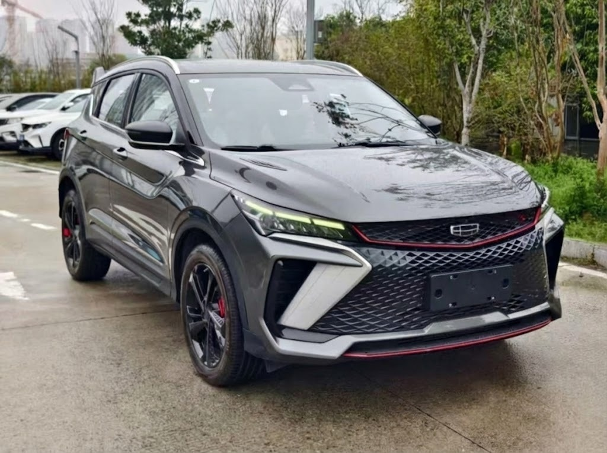
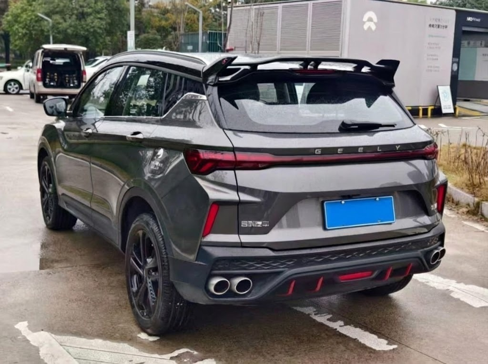
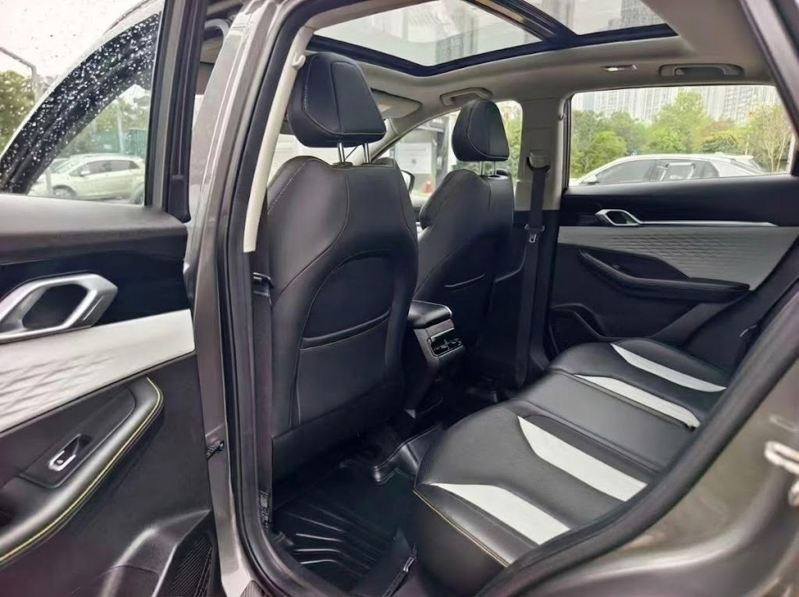

Geely Coolray (2022)



2 000 000 ₽
Описание
Стильный городской кроссовер с турбированным мотором, разработанным совместно с Volvo. Отличная динамика разгона, панорамная крыша, камеры кругового обзора и современная мультимедиа-система.
Характеристики
- Год: 2022
- Пробег: 35 000 км
- Привод: Передний
- Двигатель: 1.5 л Турбо / 150 л.с.
- КПП: Робот (7DCT)